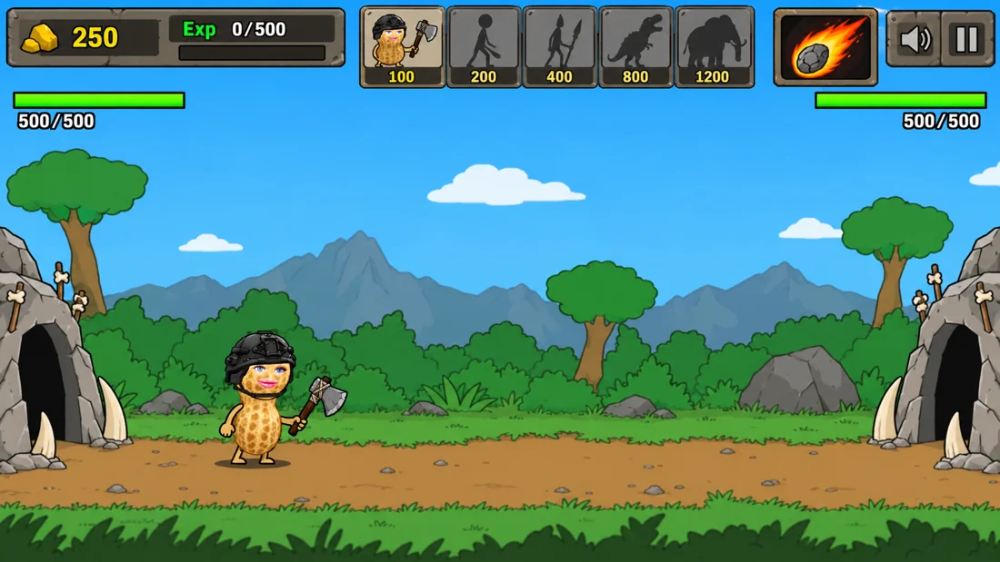

Nut of War
First, the classic. Peanut transformation comes next.

Play Age of War reference ↗This reference is AwesomeA’s existing Godot recreation of Age of War, available on the creator’s itch.io page. It is not yet our peanut remake.
Train troops, defend your base, and advance through five ages. Use the game’s difficulty selection to begin; press Space to pause. A desktop keyboard and mouse are recommended. The Play button opens the creator’s playable version in a new tab.
Original game: Louissi and CyprusX. Recreation: AwesomeA. Music: “Glorious Morning” by Waterflame. The reference retains its original artwork and audio.